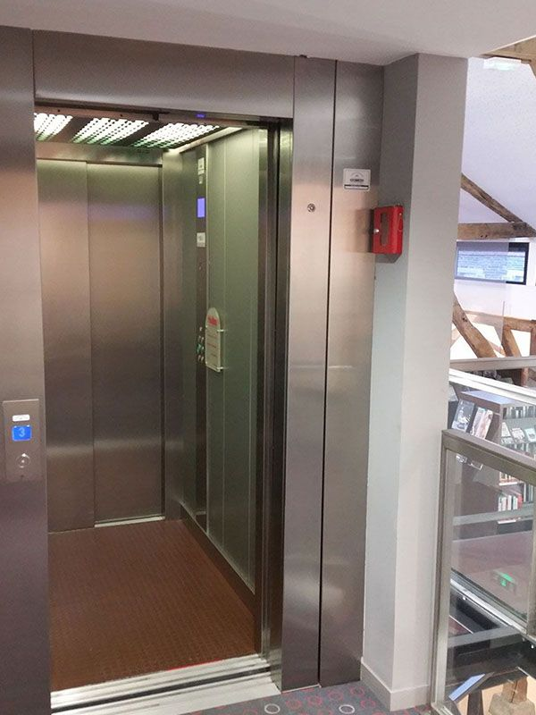

3A - Mention Sciences du Logiciel - CentraleSupelec Électif Méthode Event-B - 2025/2026
Travaux dirigés - TD
Méthode Event-B
Conception d'un système de commande sûr pour un ascenseur


Le logiciel étudié est un contrôleur qui pilote un ascenseur. Le système de l'ascenseur comprend les parties suivantes :
- une cabine,
- une porte pour la cabine,
- un câble et un moteur pour déplacer la cabine,
- des capteurs pour détecter que la cabine a atteint un étage,
- un moteur pour ouvrir et fermer la porte de la cabine,
- des capteurs pour détecter si la porte de la cabine est ouverte ou fermée,
- $N + 1$ étages,
- un bouton sur chaque étage pour appeler la cabine,
- $N + 1$ boutons dans la cabine pour choisir les étages,
- un contrôleur qui pilote le système.
Les entrées du système :
- l'état du moteur du câble (enroulement, déroulement ou arrêt),
- l'état du moteur de la porte (ouverture, fermeture ou arrêt),
- l'état des capteurs d'étage (numéro de l'étage atteint par l'ascenseur ou $-1$ si l'ascenseur est situé entre deux étages ; les étages sont comptés de $0$ à $N$),
- l'état des capteurs de porte (complètement ouvert, à moitié ouvert ou fermé),
- l'état des boutons (enfoncé ou non).
Les commandes du système :
- la commande du moteur à câble (enroulement, déroulement ou arrêt),
- la commande du moteur de porte (ouverture, fermeture ou arrêt),
- la commande des voyants des boutons (allumé ou éteint).
Méthodologie
Le développement B doit être structuré de la façon suivante :
- Machine 1 : Modélisation du déplacement de la cabine
- Machine 2 : Gestion des demandes en intégrant les voyants associés aux boutons
- Machine 3 : Modélisation de l'état de la porte
- Machine 4 : La gestion des demandes en FIFO
Les propriétés de sûreté
- Pour que l'utilisateur sache que le système a mémorisé sa demande, un petit voyant est associé à tous les boutons. Cette lumière doit être allumée lorsque l'utilisateur appuie sur le bouton correspondant. Inversement, il devrait être désactivé une fois la demande servie.
- Pour éviter les accidents, l'ascenseur doit toujours se déplacer avec le moteur de la porte en marche vers la fermeture des portes : ceci afin d'empêcher les utilisateurs d'ouvrir les portes lorsque la cabine de l'ascenseur est en mouvement.
Vérification des propriétés avec l'atelier ProB-B
Vous pouvez commencer cette activité par l'animation de votre modèle en exécutant des scénarios particuliers pour vérifier
que vous avez le comportement attendu de votre modèle.
Après animation et validation du comportement de votre modèle,
exprimez et vérifiez les propriétés LTL suivantes en utilisant le model-checker ProB:
- Si un étage est demandé, l'ascenseur finira par le servir
- La commande de la porte n'est jamais en ouverture si l'ascenseur est en mouvement
- Si la porte est à l'état ouverte, alors la cabine doit être sûrement à l'arrêt
- Proposez d'autres propriétés de sécurités que le système doit garantir
3A - Mention Sciences du Logiciel - CentraleSupelec Électif Méthode Event-B - 2025/2026